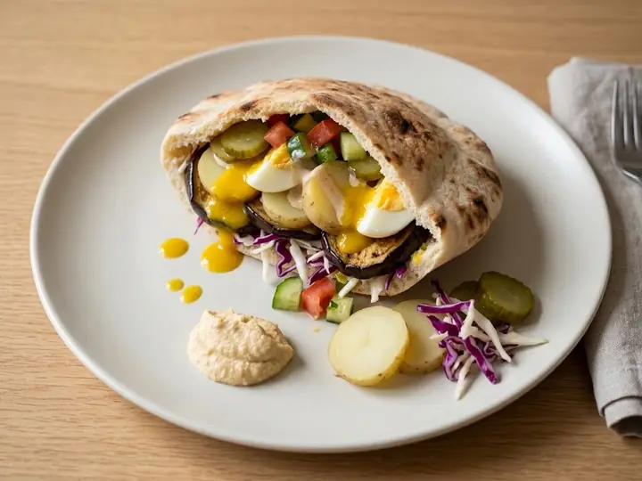

Israel · Plant-based · No. 293
Israeli-Style Sabich Pitta with Potato, Egg and Amba
A single portion of Israeli cooking, ready in 21 minutes with 9 minutes of prep. Vegetarian, and written for one, so there is nothing to halve.
Veg
Method
- 1
Fry the sliced potato in the oil over medium heat for 8–10 minutes, turning, until golden and tender.
- 2
Boil the egg for 8 minutes for a firm yolk, then cool, peel and slice.
- 3
Warm the pitta and split it open.
- 4
Spread hummus inside the pitta and fill with the fried potato, sliced egg and shredded cabbage.
- 5
Season to taste, then drizzle with tahini and amba (or mango chutney with lemon) and scatter over the chopped pickled cucumber.
Cook's notes
- Sizes. Vegetables, fruit and eggs are medium unless the recipe says otherwise. A tin is a standard 400g tin.
- Dairy. Salted or unsalted butter both work; with salted, go easy on any extra salt. Use full-fat soured cream, crème fraîche and yoghurt in anything hot, as low-fat versions split.
- Stock. A cube or pot made up as the packet says. Cubes are salty, so taste before adding more salt.
- Heat. Medium means a gentle sizzle, not spitting. High means the oil shimmers before the food goes in. A simmer is a few lazy bubbles, not a rolling boil. Leave the lid off unless the recipe says to cover.
- Pans. A small saucepan is about 16cm and a frying pan about 24cm. Sauces reduce faster in a wider pan, so go by how it looks rather than the clock.
- Doneness. Chicken and turkey should reach 75°C in the thickest part, pork 65 to 70°C, and beef steak 55°C for medium-rare. Rest steaks and chops for a few minutes before slicing.
- Finishing. Taste before serving. Most dishes want a pinch more salt, and a squeeze of lemon or a splash of vinegar lifts anything rich.
- Leftovers. Cool quickly, cover and keep in the fridge for up to 2 days, then reheat until piping hot. Cooked rice keeps for 1 day and should only be reheated once.
solosupper.co.uk/recipes/israeli-style-sabich-pitta-with-potato-egg-and-amba/
Find more like this